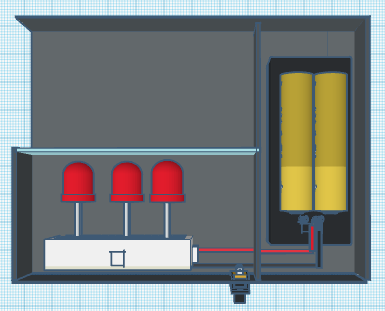

Biosensor óptico para la detección del COVID-19 mediante el uso de Quantum Dots.
Publicado el 15 de agosto del 2020


Visión
Ayudar a comunidades donde es difícil realizar pruebas PCR, la idea es lanzar el diseño de un prototipo de diagnóstico más accesible para la población en general y que tenga mayor alcance para que cualquier institución médica pueda utilizarlo con la distribución adecuada de los puntos cuánticos.

Ventajas
El biosensor de puntos cuánticos para la realización de diagnósticos tiene diversas ventajas:
- Es barato en comparación con otros métodos de diagnóstico.
- Fácil de reproducir.
- Dispositivo pequeño y compacto.
- Rápido.
- El prototipo es reutilizable incluyendo los frascos donde se colocan los puntos cuánticos.
- Los puntos cuánticos dan un resultado con mayor exactitud que otro tipo de fluoróforos.

Feature Three
On her way she met a copy. The copy warned the Little Blind Text, that where it came from it would have been rewritten a thousand times and everything that was left from its origin would be the word "and" and the Little Blind Text should turn around.
Visión:
Ayudar a comunidades donde es difícil realizar pruebas PCR, la idea es lanzar el diseño de un prototipo de diagnóstico más accesible para la población en general y que tenga mayor alcance para que cualquier institución médica pueda utilizarlo con la distribución adecuada de los puntos cuánticos.
El biosensor de puntos cuánticos para la realización de diagnósticos tiene diversas ventajas:
- Es barato en comparación con otros métodos de diagnóstico.
- Fácil de reproducir.
- Dispositivo pequeño y compacto.
- Rápido.
- El prototipo es reutilizable incluyendo los frascos donde se colocan los puntos cuánticos.
- Los puntos cuánticos dan un resultado con mayor exactitud que otro tipo de fluoróforos.
Quantum Dots o Puntos Cuánticos
Los Quantum Dots (QD) son nanocristales semiconductores con espectros de excitación amplios, tiempos de fluorescencia largos y la capacidad de conjugarse con proteínas. Se utilizan ampliamente en la investigación biológica como herramientas de imágenes de fluorescencia, los QD tienen rendimientos cuánticos y fotoestabilidad mucho mayores que los de los tintes orgánicos en longitudes de onda similares. Actualmente los investigadores aprovechan la capacidad de los conjugados de ligandos QD para activar su internalización al unirse a sus respectivos receptores con fines de diagnóstico o tratamiento.
Funcionamiento del biosensor con Quantum Dots.
EXPLICACIÓN.
Más EXPLICACION
Explicación.
Equipo
Aldo Arvey Marin Olvera
Estudiante de Licenciatura en Física en la UANL.
Susana Abigail González Robledo
Estudiante de Licenciatura en Física en la UANL.
Tania Carolina Acevedo Durán
Estudiante de Ingeniería en Biotecnología en la.
Emiliano Marín Merino
Wild Question Marks, but the Little Blind Text didn’t listen.